A hormone such as adrenaline never enters the cell. It binds a receptor on the outside, and within seconds the inside of the cell changes. Today: the largest family of receptors, the G-protein-coupled receptors (GPCRs), and the small second messengers they make inside the cell.
After this lecture you can:
describe a GPCR (seven transmembrane helices) and how a hormone switches it on;
explain the trimeric G protein as a timed switch, and the three main kinds: Gs, Gi, Gq;
follow the two main pathways: cAMP → PKA and IP₃ → Ca²⁺ / DAG → PKC, including calmodulin;
explain how the cascade amplifies the signal, and how every step is switched off (GTP hydrolysis, phosphodiesterase, GRK + arrestin, endocytosis);
describe how we watch second messengers in living cells (Ca²⁺ imaging, FRET sensors);
explain how cholera toxin, β-blockers, opioids and GLP-1 drugs act on this machinery.
The question: one hormone, many effects, all from outside
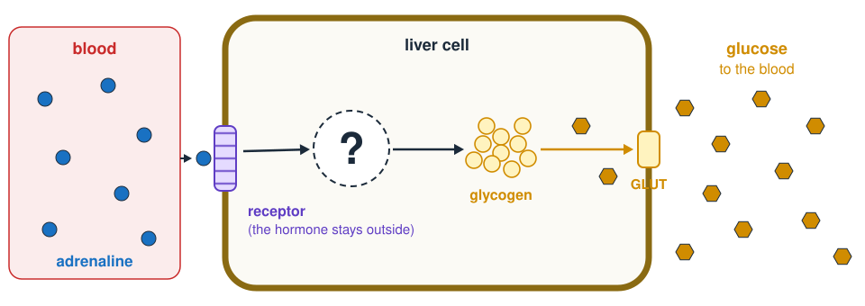
Fright or exercise: the adrenal gland releases adrenaline (epinephrine) into the blood. Within seconds the heart beats faster and the liver releases glucose.
Adrenaline is water-soluble: it cannot cross the membrane. It binds a receptor on the outside.
How does the signal cross the membrane? Why is the response so large and so fast, and how does it stop? And why does cholera, a gut infection, cause litres of watery diarrhoea?
GPCRs: seven helices across the membrane
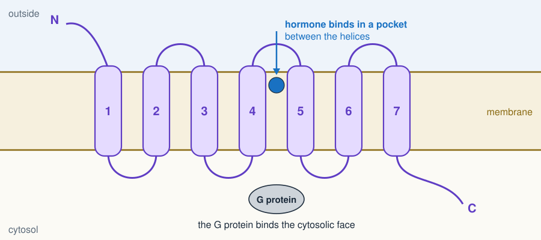
One protein chain crosses the membrane seven times (7TM). N-terminus outside, C-terminus inside. Drawn unrolled here; in reality the helices form a bundle.
The ligand binds outside or in a pocket between the helices; the G protein binds the cytosolic face.
About 800 human GPCRs: receptors for hormones, neurotransmitters, light (rhodopsin), smell and taste (about half are odorant receptors).
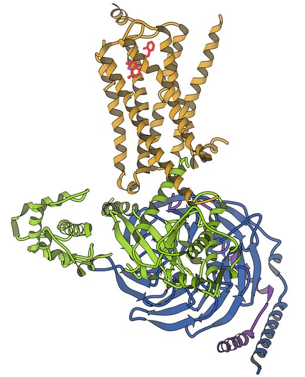
β₂-adrenergic receptor (gold) bound to its G protein (green, blue, purple), from X-ray crystallography (PDB 3SN6).
Activation: the receptor swaps GDP for GTP
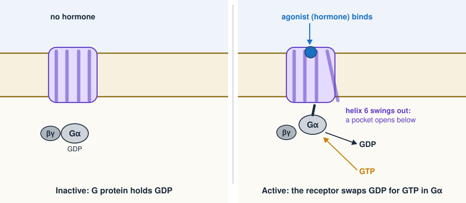
Agonist binding shifts the helices: helix 6 swings outwards (about 1.4 nm in the β₂ receptor), opening a pocket on the cytosolic side.
The Gα subunit’s C-terminal helix inserts into that pocket. This pulls open Gα’s nucleotide site: GDP leaves, and GTP (10 × more abundant in the cytosol) enters.
So the active receptor is a GEF (guanine nucleotide exchange factor) for the G protein. It then lets go and activates the next one.
The trimeric G protein is a switch with a timer
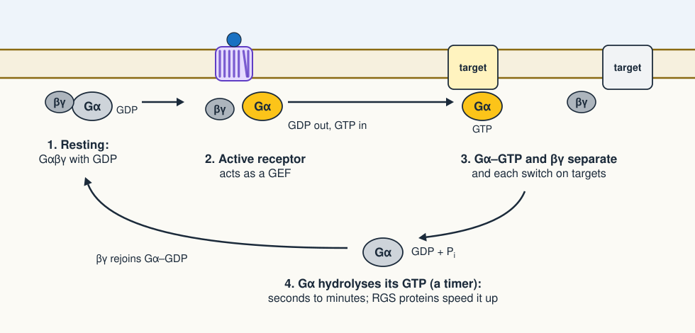
Three subunits: Gα (binds GDP or GTP) and the tight pair Gβγ. Both are anchored to the membrane by lipid tails.
With GTP, Gα separates from βγ: both halves can switch on targets.
Gα is itself a slow GTPase: after seconds to minutes it hydrolyses GTP and switches off. RGS proteins speed this up for many G proteins.
Three main kinds of G protein: Gs, Gi, Gq
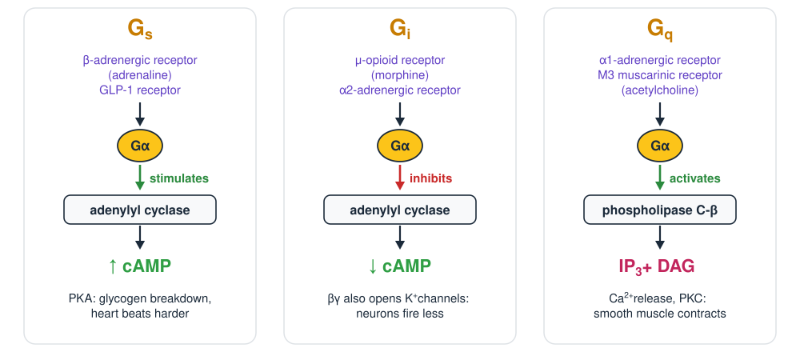
The receptor decides which G protein is used; the Gα type decides the effect. The same hormone can act through different receptors: adrenaline uses β (Gs), α₂ (Gi) and α₁ (Gq) receptors.
Simplified: there are more Gα types (e.g. G₁₂/₁₃, and transducin in the eye), and βγ has its own targets.
The cAMP pathway: adenylyl cyclase, cAMP and PKA
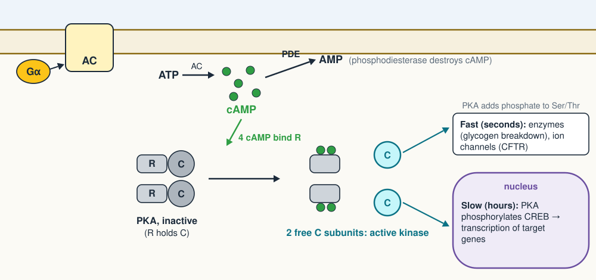
Adenylyl cyclase (in the plasma membrane) turns ATP into cyclic AMP. Phosphodiesterases (PDEs) turn cAMP into AMP. Resting cAMP is low (about 0.1 µM), stimulated several µM.
PKA (protein kinase A) is held inactive by its regulatory (R) subunits. Four cAMP bind the R subunits, and two catalytic (C) subunits are released.
Free C phosphorylates Ser/Thr on target proteins: fast effects on enzymes and channels (seconds), slow effects on genes via CREB (hours).
Amplification: from one hormone to thousands of molecules
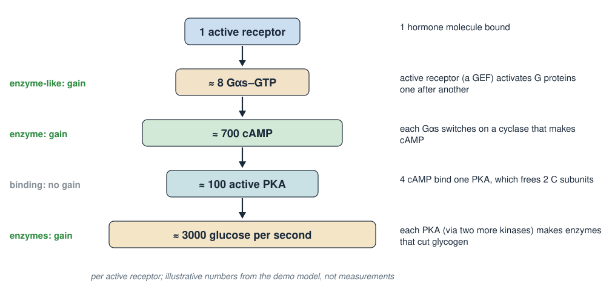
Gain comes from steps where one active molecule acts on many: the receptor (one G protein after another), adenylyl cyclase, the kinases and the enzymes they switch on.
Binding steps do not amplify: four cAMP free two C subunits of PKA.
In the liver, the glycogen cascade has two more kinase steps after PKA, so a few hormone molecules can release millions of glucose molecules.
Gq: IP₃ releases Ca²⁺, DAG recruits PKC
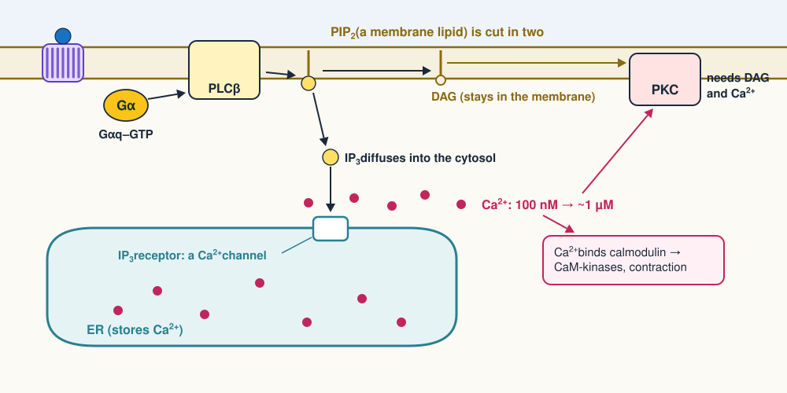
Phospholipase C-β cuts the membrane lipid PIP₂ into IP₃ (soluble) and DAG (stays in the membrane).
IP₃ opens the IP₃ receptor, a Ca²⁺ channel in the ER. Cytosolic Ca²⁺ rises from about 100 nM to about 1 µM.
PKC (protein kinase C) moves to the membrane when Ca²⁺ rises and becomes active when it also binds DAG.
Ca²⁺ acts through calmodulin
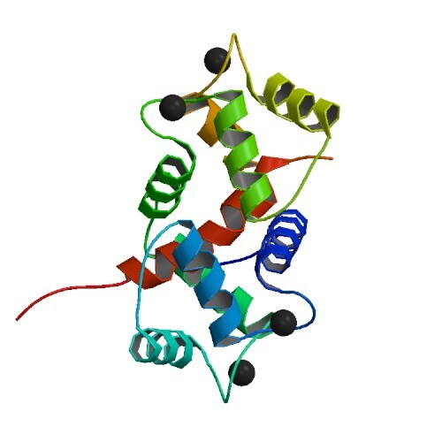
Calmodulin with four Ca²⁺ ions (black spheres), wrapped around a helix of its target, myosin light-chain kinase.
Calmodulin is a small, abundant protein with four Ca²⁺ binding sites. They fill when Ca²⁺ rises towards 1 µM.
With Ca²⁺ bound, calmodulin wraps around a helix of its target and switches it on:
adenylyl cyclases and phosphodiesterases: cross-talk with cAMP.
Ca²⁺ signals often come as spikes or oscillations: the cell can code strength in their frequency.
Pumps (SERCA in the ER, PMCA in the plasma membrane) bring Ca²⁺ back to 100 nM.
How do we know? Finding and seeing the receptor
1970s: Robert Lefkowitz used radioactive ligands to show that receptors are real, countable proteins in the membrane, and purified the β-adrenergic receptor.
1986: his group, with Brian Kobilka, cloned the gene. Its sequence showed seven hydrophobic helices, like rhodopsin, the light receptor: one family for hormones and light.
2007–2011: Kobilka’s group solved the crystal structure of the β₂ receptor, and then of the receptor caught in the act of activating Gs (PDB 3SN6, the structure two slides back).
Nobel Prize in Chemistry 2012. Today cryo-EM gives new GPCR–G protein structures every week, and drugs are designed against them.
Brian Kobilka (left) and Robert Lefkowitz at the Nobel Prize ceremony in Stockholm, December 2012.
How do we know? Watching second messengers live
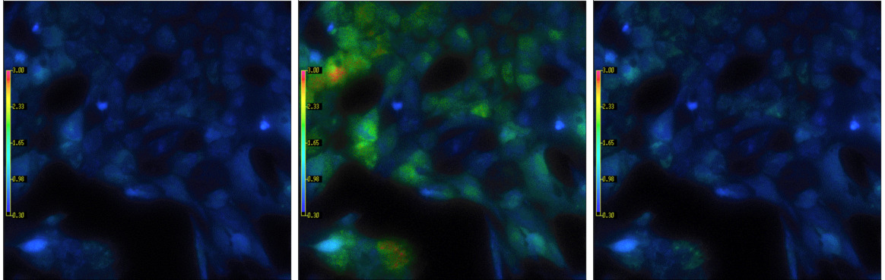
Retinal glial cells loaded with the Ca²⁺ dye fura-2: before ATP, a few seconds after adding ATP (which acts on a Gq-coupled receptor), and later. Blue = low Ca²⁺, red = high.
Ca²⁺ imaging: a dye (fura-2) or a genetically encoded sensor (GCaMP: GFP + calmodulin) gets brighter or changes colour when it binds Ca²⁺.
FRET sensor for cAMP (right): cAMP opens the sensor, so less energy passes from CFP to YFP; the blue/yellow ratio reads cAMP.
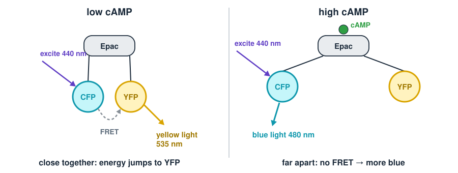
Switching off: every step has its own off-switch
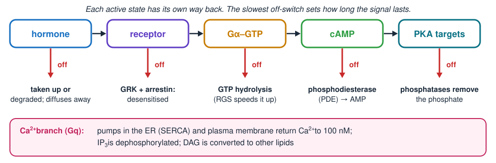
A signal is only useful if it ends. Each active state decays on its own: GTP hydrolysis in Gα, PDE for cAMP, phosphatases for the phosphorylated targets, pumps for Ca²⁺.
The signal lasts as long as the slowest off-step allows. Block one off-switch and the signal outlasts the hormone.
This is why the PDE inhibitors caffeine and theophylline raise cAMP (theophylline was used for asthma).
Desensitisation: GRK, arrestin and endocytosis
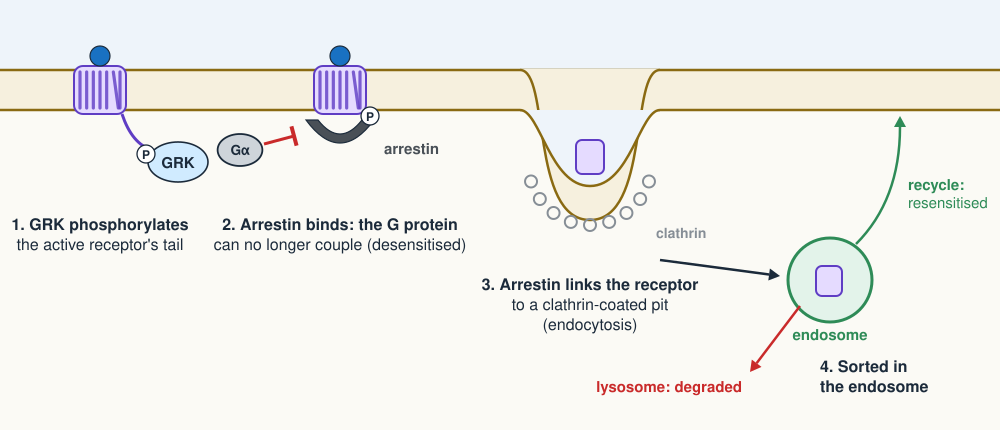
GRK (G-protein-coupled receptor kinase) phosphorylates only active receptors on their tail. Arrestin binds the phosphorylated tail and blocks G-protein coupling: the receptor is desensitised, even with hormone bound.
Arrestin is also an adaptor for clathrin: the receptor is taken into the cell by endocytosis (the endocytosis lecture). In the endosome it is recycled (resensitised) or sent to the lysosome (fewer receptors).
Result: under constant hormone the response fades (minutes), and with long drug use tolerance develops.
The off-rates set the shape of the signal
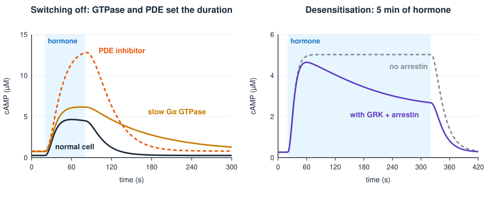
Left: a 1-minute hormone pulse. A slow GTPase or a PDE inhibitor makes cAMP rise higher and last longer after the hormone has gone.
Right: 5 minutes of hormone. With GRK + arrestin, cAMP peaks and then falls although the hormone is still there.
Curves from a simple model with illustrative numbers. Try it:Demo: GPCR cascade
Why it matters: cholera toxin locks Gs on
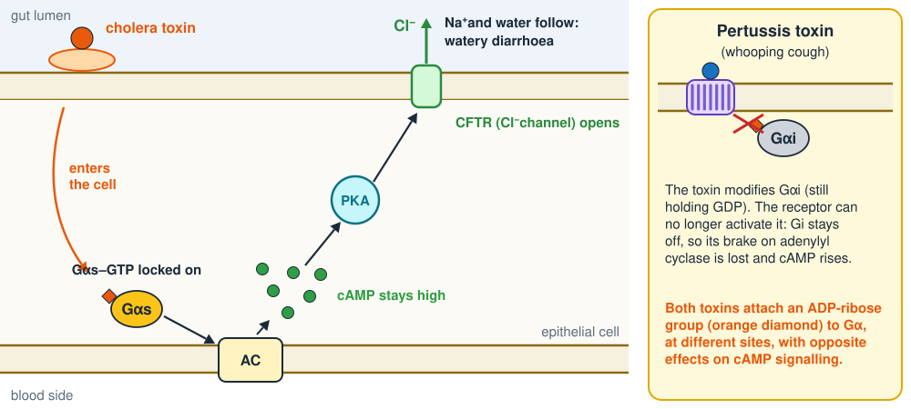
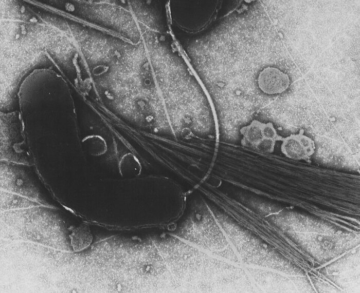
Vibrio cholerae, electron microscope (negative stain).
Cholera toxin attaches ADP-ribose to Gαs, which then cannot hydrolyse GTP: Gs stays on, cAMP stays high in gut cells. PKA opens CFTR; Cl⁻, Na⁺ and water pour into the gut: several litres a day.
Treatment: oral rehydration (water + salt + glucose), which uses the SGLT Na⁺–glucose symporter that cholera leaves intact.
Why it matters: three drug classes acting on GPCRs
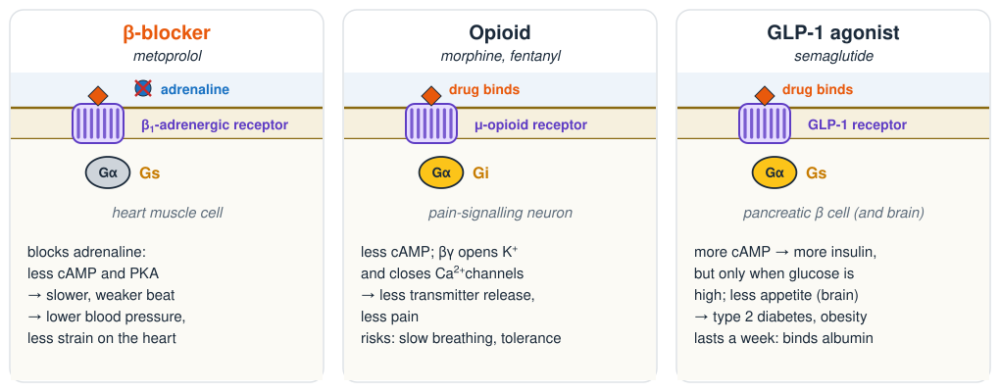
About one third of approved drugs act on GPCRs. β-blockers are antagonists: they occupy the receptor without activating it. Opioids and GLP-1 drugs are agonists.
Semaglutide is GLP-1 made long-lasting: natural GLP-1 lasts minutes; semaglutide resists breakdown and binds albumin, so one injection lasts a week.
You meet these drugs again in Organs struktur och funktion (heart, pancreas) and Kliniska prövningar och läkemedelsutveckling.
Summary
GPCRs have seven transmembrane helices. An agonist shifts the helices; the active receptor is a GEF that swaps GDP for GTP in the trimeric G protein.
Gα–GTP and βγ switch on targets: Gs ↑ cAMP, Gi ↓ cAMP, Gq → PLC-β → IP₃ (Ca²⁺ from the ER) + DAG (with Ca²⁺ activates PKC). Ca²⁺ acts through calmodulin.
cAMP frees the catalytic subunits of PKA, which phosphorylate enzymes, channels and transcription factors. Enzymes in series amplify the signal.
Every step is switched off: GTP hydrolysis, phosphodiesterase, phosphatases, Ca²⁺ pumps; GRK + arrestin desensitise the receptor and lead to endocytosis.
Ca²⁺ imaging and FRET sensors show these signals live. Toxins and drugs act on single steps: cholera toxin (Gs stuck on), β-blockers, opioids, semaglutide.
Read more (optional): Alberts et al., Molecular Biology of the Cell, 7th ed., ch. 15.